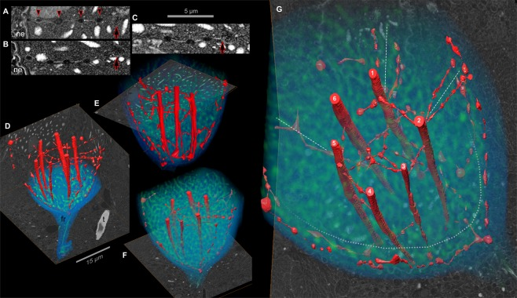

nuclear net
A reticulating double-membrane network characterized inside the nucleus of the dinoflagellate Polykrikos kofoidii. Its strands interconnect dinomitotic tunnels and the peripheral nuclear envelope, with regularly spaced swellings along the inner strands; the network is continuous with and forms part of the nuclear envelope. [DOI:10.1038/s41598-018-37065-w]

NCBITaxon:271679) · Gregory S. Gavelis, Maria Herranz, Kevin C. Wakeman, Christina Ripken, Satoshi Mitarai, Gillian H. Gile, Patrick J. Keeling, Brian S. Leander; CC BY, via PubMed Central · CC_BY_4_0 · source: PMC PMC6351617.1 Fig3 · DOI:10.1038/s41598-018-37065-wPart of: nuclear envelope (GO:0005635)
Components
| Component | Type | Part of / acts on | Grounding | Genes | Stoichiometry | Essential | Role |
|---|---|---|---|---|---|---|---|
| membrane | Other | part of | GO:0016020 | UNKNOWN | Two membranes line the strands and continue into those lining the dinomitotic tunnels.
|
Canonical examples
NCBITaxon:271679Polykrikos kofoidii — Wild-collected pseudocolonies. One specimen was reconstructed by FIB-SEM after high-pressure freezing and freeze substitution, complemented by TEM and confocal observations of additional specimens. [DOI:10.1038/s41598-018-37065-w]
Discussions
- CURATION_TODO (RESOLVED): Distinguish the nuclear net from broader nuclear-envelope invaginations and neighboring structures. An exact mapping must denote the same entity rather than import unverified features.
- CURATION_TODO (RESOLVED): Do not promote immunofluorescence proximity into a molecular constituent assignment. Confocal correspondence alone does not resolve the molecular composition of individual membrane strands.
- CURATION_TODO (OPEN): Establish molecular machinery, function, cell-cycle dynamics and three-dimensional occurrence beyond Polykrikos kofoidii. A reconstructed static network does not establish transport, mitotic force generation or clade-wide prevalence.
Evidence
DOI:10.1038/s41598-018-37065-wGavelis et al. (2019), Scientific Reports. Primary Results, Discussion, Conclusion, Methods and Figure 3 read via publisher and PMC BioC/JATS. Three-dimensional continuity supports nuclear-envelope parthood; chemical fixation disrupts the finer network. Neither lumenal flow nor a division mechanism was demonstrated.GO:0005622Verified broad intracellular-anatomical-structure parent. This named membrane network is not asserted to be a separate sealed organelle or the entire nuclear envelope.
Curation history
2026-10-03T17:14:01Zcodex · CREATED_RECORD — Scaffolded by scripts/new_record.py2026-10-03T17:15:43Zcodex · EXPANDED_RECORD — Added verified nuclear-envelope topology, membrane constituent class, Polykrikos microscopy example, ontology and molecular evidence boundaries, unresolved functional scope and inspected CC BY Figure 3.